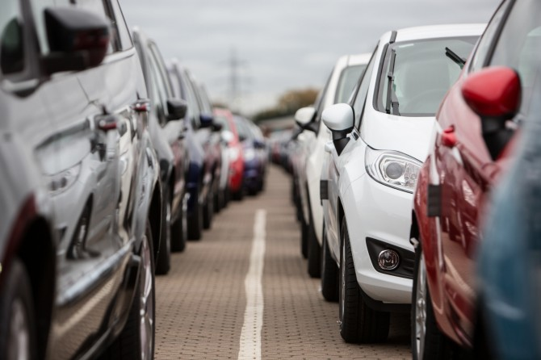
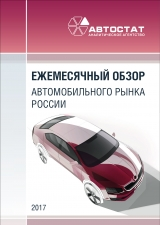

Продажи легковых автомобилей и легкого коммерческого транспорта
в
России в январе снизились на
3,7% до 91662 машин, гласят данные Ассоциации европейского бизнеса.
Как отмечают в АЕБ, традиционно январь – месяц низких продаж новых автомобилей. Как и
ожидалось, в 2022 году тренд незначительного снижения рынка продолжился, причем продажи
легких коммерческих автомобилей сократились намного существеннее, на 15%, из-за снижения
деловой активности в период новогодних каникул. Как и прогнозировалось, в ассоциации не
ожидают быстрого восстановления рынка в этом году, но надеются, что преобладающий сегодня
тренд изменится во втором полугодии. Согласно актуальному прогнозу АЕБ, по итогам 2022 года
в России будет продано 1 млн 722 тыс. легковых и легких коммерческих автомобилей, что
означает рост рынка на 3,3% по сравнению с прошлым годом.

Лидерство на российском авторынке удерживает марка LADA, чьи продажи в прошлом месяце снизились
на 17% и составили 18045 автомобилей. Второе место по объему продаж сохраняет Kia – реализация
12321 машины (-18%) обеспечила корейской марке лидерство на рынке иномарок. Третью строчку
занимает Hyundai с показателем 11356 проданных автомобилей, что на 4% выше показателя годичной
давности.
Далее следует Renault – автомобили этой марки выбрали 7938 покупателей (-7%). Замыкает пятерку
лидеров Toyota, чьи продажи увеличились на 15% и составили 6126 машин. В ТОП-10 самых
продаваемых марок по итогам января также вошли Volkswagen (4317 шт., -24%), Nissan (4254 шт.,
+30%), Skoda (3840 шт., -36%), Haval (3169 шт., рост в 2 раза) и Chery (2820 шт., +47%).Во
сколько обойдется содержание автомобилей этих или других марок, можно подсчитать с помощью
«Калькулятора оценки стоимости владения». А какими легковыми автомобилями выгоднее всего владеть
в России? Список таких моделей назвали эксперты агентства «АВТОСТАТ» в рамках подведения итогов
премии «Стоимость владения автомобилем – 2021» (ТСО – Total Cost of Ownership).
Лидерство на российском авторынке удерживает марка LADA, чьи продажи в прошлом месяце снизились
на 17% и составили 18045 автомобилей. Второе место по объему продаж сохраняет Kia – реализация
12321 машины (-18%) обеспечила корейской марке лидерство на рынке иномарок. Третью строчку
занимает Hyundai с показателем 11356 проданных автомобилей, что на 4% выше показателя годичной
давности.
Далее следует Renault – автомобили этой марки выбрали 7938 покупателей (-7%). Замыкает пятерку
лидеров Toyota, чьи продажи увеличились на 15% и составили 6126 машин. В ТОП-10 самых
продаваемых марок по итогам января также вошли Volkswagen (4317 шт., -24%), Nissan (4254 шт.,
+30%), Skoda (3840 шт., -36%), Haval (3169 шт., рост в 2 раза) и Chery (2820 шт., +47%).Во
сколько обойдется содержание автомобилей этих или других марок, можно подсчитать с помощью
«Калькулятора оценки стоимости владения». А какими легковыми автомобилями выгоднее всего владеть
в России? Список таких моделей назвали эксперты агентства «АВТОСТАТ» в рамках подведения итогов
премии «Стоимость владения автомобилем – 2021» (ТСО – Total Cost of Ownership).